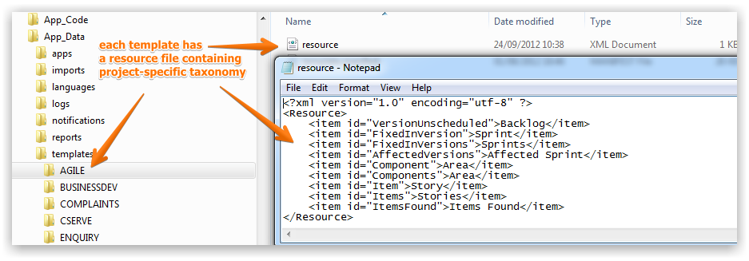

The application base taxonomy may not be suitable for your organization and even if it is suitable for some of your users it is unlikely that a wide-scale deployment across departments, teams and processes will use the same taxonomy throughout.
For example, help desk users may want 'items' to be called 'Tickets' while a software development team using the Agile methodology would want to call 'items' 'Stories' and marketers might want to call 'items' 'Campaigns'. The Project Template structure separates the resource files so that each team's terminology and nomenclature around process flows is respected
The App_Data\templates folder contains one folder per Template deployed. In the folder for each template is a resource.xml file that can be edited to override any default terminology.

The following video will provide an overview of the creation, configuration, and workflow of taxonomy within Gemini.